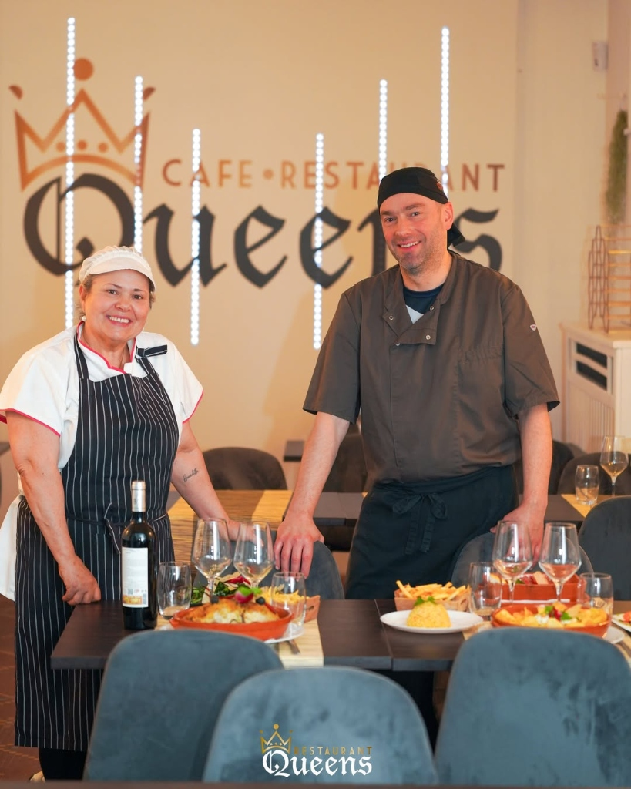

Restaurant Queens
Cuisine Portugaise & Grillades · Diekirch
Tradition, saveurs et passion depuis le cœur du Luxembourg
Nous Trouver
Venez nous rendre visite au cœur de Diekirch
Adresse
19, Esplanade
9220 Diekirch
Luxembourg
Horaires
- Lundi11h – 22h
- MardiFermé
- Mercredi11h – 22h
- Jeudi11h – 22h
- Vendredi11h – 23h
- Samedi11h – 23h
- Dimanche11h – 22h